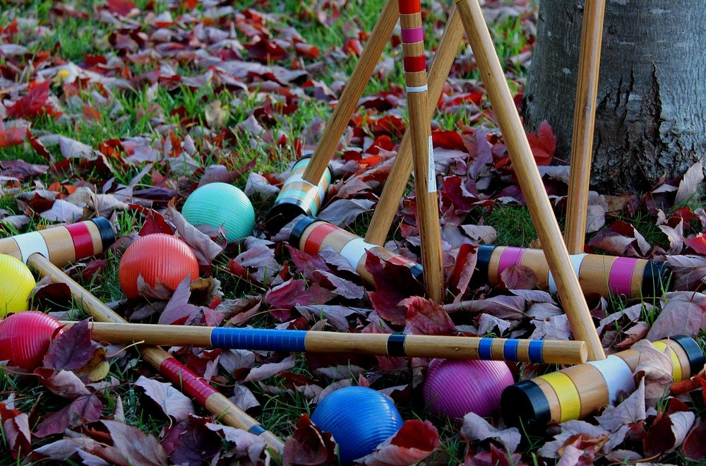

Stephens Croquet Club
About Croquet
Croquet, played on specially built courts using precision mallets, balls and hoops, is an addictive game of skill and strategy. It combines strategy and precision and is a bit like snooker on grass, or a combination of chess and golf.
The basics are easy to learn, and yet there is always a new level for those who seek a challenge.
Croquet is a competitive sport with a relaxed, sociable atmosphere, and a strong tradition of sportsmanship. A system of handicapping is in place so that players of differing abilities are able to compete on an equal footing against each other.
It is one of the few outdoor sports in which men and women compete equally.
The games played at Stephens
- Association Croquet: the "original" form of croquet, traditional and more complex than Golf Croquet.
- Golf Croquet: a more recent, simplified version of the traditional game, easy to learn and can be played in under an hour. Most new players start here.
- Ricochet: an Australian variant that simplifies Association Croquet by removing the croquet shot. Not as straightforward as it may first appear.
Further reading on the history of croquet
- The modern game in Australia
- 1830s to 1960s in England
- History from 1066 to 1400 AD